What to Know About St. George, Utah
St. George in October offers a pleasant climate and manageable crowds, making it ideal for outdoor activities. Expect warm days and cool nights.
Local customs: Politeness is appreciated; saying 'thank you' goes a long way.
Best times of day: Mornings are great for hikes, while evenings allow for dining and local events.
Transportation quirks: Most attractions are easily accessible by car. Parking is generally available but can fill up on weekends.
Safety: Stay hydrated when hiking and watch for wildlife on trails. Sunscreen is advisable even in fall.
Crowd patterns: October sees fewer visitors compared to summer, creating a more relaxed atmosphere.
Local etiquette: Be respectful of private property and follow posted signs at parks and trails.

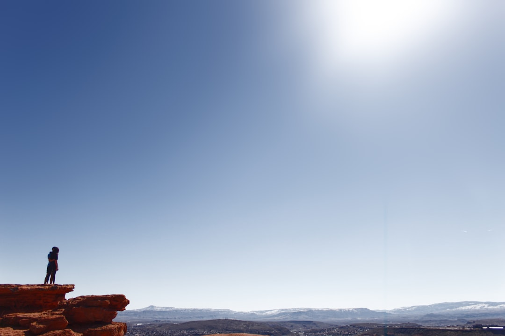
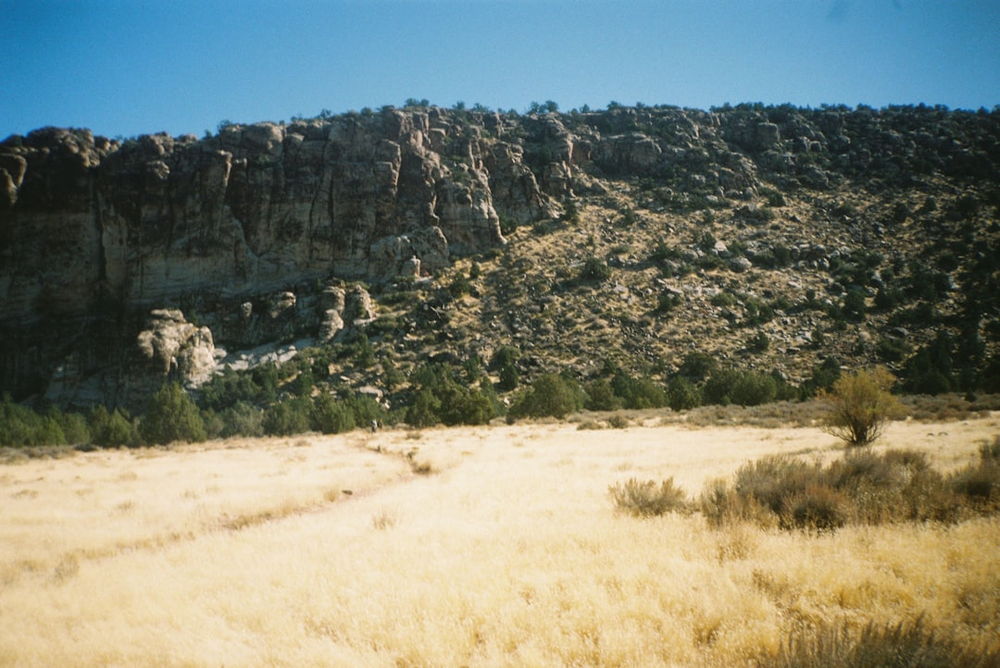
🧥 What to Expect
Typical October temperatures are around 77°F daytime and 55°F overnight. Fall colors begin to appear in St. George, with warm days and cool nights. Crowds are manageable compared to summer, making it a good time for outdoor activities. No shuttles or permits are required for most trails.
Current Weather🚗 Getting Here
Open in Google Maps →Take I-15 S to exit 8 for St. George. The drive features desert landscapes and red rock formations. Last stretch offers views of the surrounding mountains as you approach the city.
🏔️ Top Attractions
⏰ Possible Daily Schedule
🎭 Cultural Events & Entertainment
St. George has a lively arts scene with regular performances and events throughout the month. Local venues often host live music and theater productions, providing entertainment options for visitors.
October 17, 2026
📍 Mesquite Regional Sports and Event Complex
💵 Varies
🍽️ Dinner Recommendations
Zion National Park
October 18, 2026
NPS / Ally O'Rullian
What to Know About Zion National Park
Zion National Park in October is a prime destination for fall foliage and pleasant weather. Expect cooler mornings and warm afternoons. Plan your hikes early to avoid the midday heat and crowds.
Local customs: Respect the natural environment and stick to marked trails to help preserve the park.
Best times of day: Early morning and late afternoon are ideal for hiking and photography.
Transportation quirks: The park operates a shuttle system that is required for access to popular areas during peak times.
Safety: Stay hydrated and be aware of changing weather conditions, especially in the canyons.
Crowd patterns: Crowds are generally lighter in October compared to the summer months, but weekends may still be busy.
Local etiquette: Maintain a safe distance from wildlife and adhere to park regulations to ensure a safe visit.

🧥 What to Expect
Typical October temperatures are around 62°F daytime and 38°F overnight. Autumn colors highlight the canyon walls with rich golds and reds. Crowds are lighter than summer, making for a more tranquil experience. The park shuttle is required for access to Zion Canyon; plan accordingly.
Current Weather🚗 Getting Here
Open in Google Maps →Take I-15 N and UT-9 E to reach Zion National Park. The drive features scenic views of the Virgin River and surrounding red rock formations. Arrive at the park entrance and park at the visitor center.
🏔️ Top Attractions
⏰ Possible Daily Schedule
🎭 Cultural Events
Zion National Park is a remote setting with limited cultural events in October. The park offers interpretive programs, including visitor center exhibits and ranger-led talks. Nearby Springdale features local dining and occasional live music, but specific events during your visit are not listed.
Local tip: Check for evening programs at the Zion National Park amphitheater, which often feature ranger talks and presentations. These programs provide insight into the park's natural and cultural history.
🍽️ Dinner Recommendations
Bryce Canyon National Park
October 19–21, 2026
USFWS Mountain-Prairie
What to Know About Bryce Canyon National Park
Expect cooler temperatures and beautiful fall colors during your visit. Plan for shorter daylight hours and dress in layers to accommodate changing weather.
Local customs: Respect wildlife by observing animals from a distance and not feeding them.
Best times of day: Early morning and late afternoon provide the best lighting conditions for photography.
Transportation quirks: Parking can be limited at popular viewpoints; arrive early to secure a spot.
Safety: Stay on marked trails and watch for loose rocks or slippery surfaces.
Crowd patterns: Weekdays tend to be less crowded than weekends, especially in the morning.
Local etiquette: Maintain a quiet atmosphere in the park to enhance the experience for all visitors.
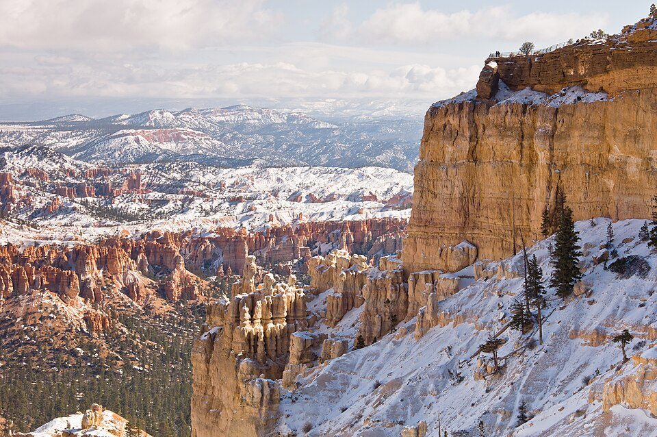


🧥 What to Expect
Typical October temperatures are around 60°F daytime and 40°F overnight. The canyon walls glow with autumn colors, especially in the early morning light. Crowds are lighter than peak summer months, providing a more relaxed experience. Most trails are open, but check for any seasonal conditions that may affect accessibility.
Current Weather🚗 Getting Here
Open in Google Maps →Travel east along US-89 and then take UT-12, a scenic byway known for its dramatic landscapes. The route offers views of canyons and plateaus, culminating in a approach to Bryce Canyon. Parking is available at the main park entrances.
🏔️ Top Attractions
⏰ Possible Daily Schedule
🎭 Cultural Events
Bryce Canyon National Park is primarily a natural attraction with limited cultural events in October. The park offers interpretive programs such as ranger-led talks and evening programs at the amphitheater. The nearest gateway town, Bryce Canyon City, has a few dining options and may host local music, but specific events are not scheduled during this time.
Local tip: Check out Ebenezer's Bar & Grill for live country music by The Bryce Canyon Wranglers. They host dinner shows through October, providing a local dining and entertainment option.
🍽️ Dinner Recommendations
Capitol Reef National Park
October 21–22, 2026
Ken Lund from Reno, Nevada, USA
What to Know About Capitol Reef National Park
Capitol Reef National Park in October presents mild temperatures and beautiful fall colors. Expect a mix of sunny days and cool nights, perfect for hiking and exploring the park.
Local customs: Respect the natural environment by sticking to established trails and following Leave No Trace principles.
Best times of day: Early morning is ideal for cooler temperatures and fewer crowds, especially at popular hikes.
Transportation quirks: While the park is accessible by standard vehicles, some remote areas may require high-clearance vehicles.
Safety: Stay hydrated and be prepared for changing weather conditions. Cell service is limited in the park.
Crowd patterns: October sees a decrease in visitors compared to summer, providing a more tranquil experience.
Local etiquette: Be courteous to fellow visitors by sharing trails and keeping noise levels down.

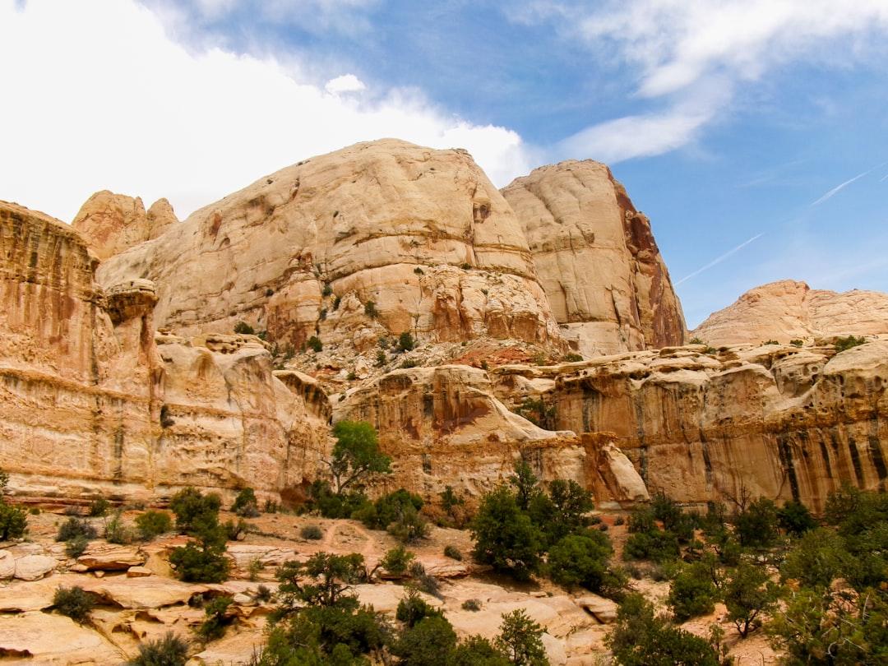
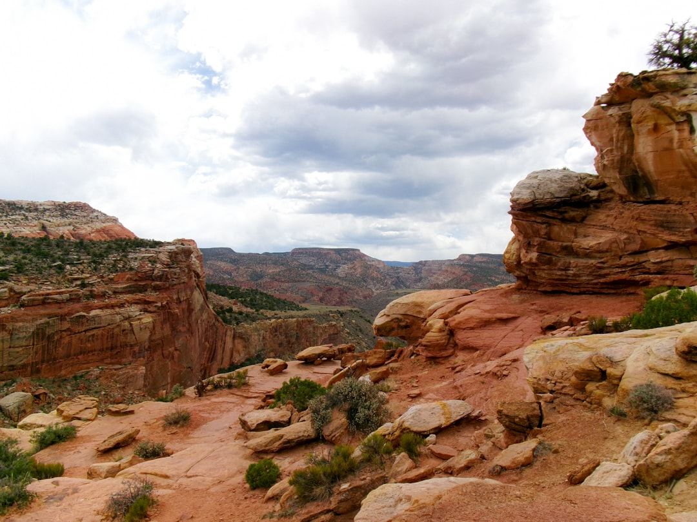
🧥 What to Expect
Typical October temperatures are around 61°F daytime and 41°F overnight. Fall colors will accentuate the park's rock formations, with the landscape shifting to warm hues of red and gold. October sees fewer crowds compared to summer months, making for a more serene experience. The park's roads are open, but check for any localized closures.
Current Weather🚗 Getting Here
Open in Google Maps →Take US-89 S to UT-24 W, a scenic route through the red rock landscapes of southern Utah. The drive features striking views of the surrounding cliffs and canyons. Arrive at the park entrance and prepare for a variety of outdoor activities.
🏔️ Top Attractions
⏰ Possible Daily Schedule
🎭 Cultural Events
Capitol Reef National Park is a remote destination with a focus on natural beauty rather than ticketed cultural events. In October, visitors can participate in the park's interpretive programs, which include ranger-led talks and evening programs at the amphitheater. The nearest gateway town, Torrey, offers a few local amenities, but cultural activities are limited.
🍽️ Dinner Recommendations
What to Know About Moab
Moab in October offers pleasant weather for outdoor activities and fewer crowds than peak season. Expect cooler nights and warm days, making layering essential.
Local customs: Residents appreciate outdoor activities and sustainability. Support local businesses.
Best times of day: Morning is ideal for hikes to avoid heat and crowds. Evenings are great for stargazing due to low light pollution.
Transportation quirks: Public transportation options are limited. Renting a car is recommended for flexibility.
Safety: Stay hydrated while hiking and be aware of changing weather conditions. Carry a map and let someone know your plans.
Crowd patterns: Weekdays are generally less crowded than weekends. Expect more visitors at popular attractions on Saturdays.
Local etiquette: Respect the natural environment by following Leave No Trace principles. Be courteous to fellow hikers and drivers.
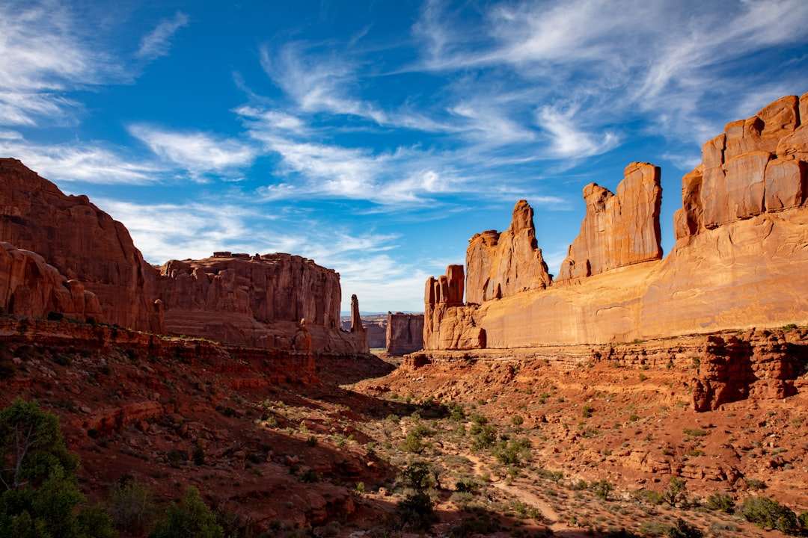
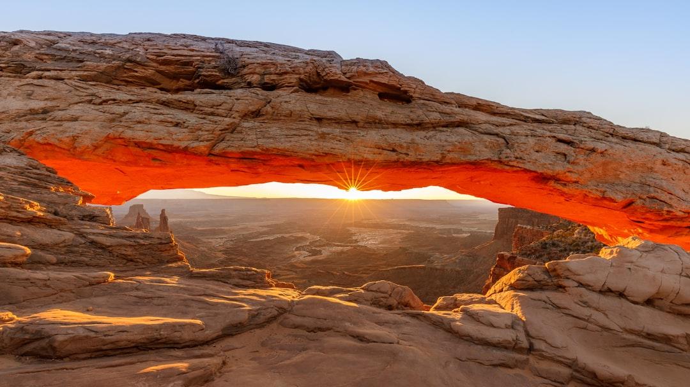
🧥 What to Expect
Typical October temperatures are around 70°F daytime and 46°F overnight. Fall colors enhance the desert landscape, with golden cottonwoods contrasting against red rock formations. Crowds are thinner than in summer, allowing for a more relaxed experience. Bring plenty of water for hikes and layers for the cooler evenings.
Current Weather🚗 Getting Here
Open in Google Maps →Take US-24 E to I-70 E, then US-191 S into Moab. The drive features beautiful desert landscapes and rock formations. Parking is available near your lodging.
🏔️ Top Attractions
⏰ Possible Daily Schedule
🎭 Cultural Events
Moab has a rich outdoor culture, especially in October when the weather is mild. Visitors can explore local art galleries and enjoy the stunning landscapes that attract outdoor enthusiasts year-round. The town has a few breweries and cafes that often host live music, creating a relaxed atmosphere for travelers.
Local tip: Check out the Moab Farmers Market on Saturday morning for local produce and crafts. It's a great way to experience the community vibe.
🍽️ Dinner Recommendations
What to Know About Arches National Park
Arches National Park in October offers mild weather and beautiful fall colors. Expect cooler nights and moderate crowds. Plan your hikes early to avoid peak visitor times.
Transportation quirks: Public transportation options are limited; a personal vehicle is necessary for park access.
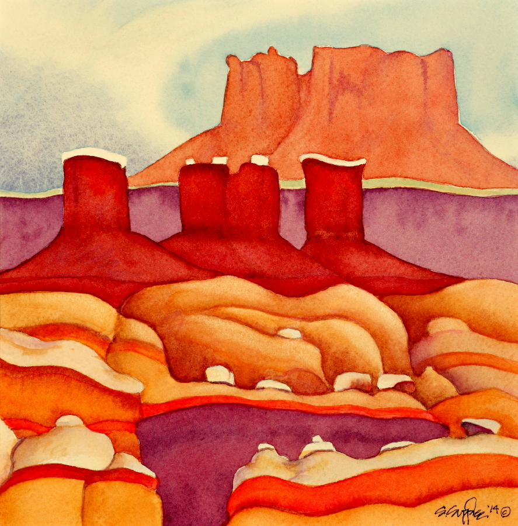
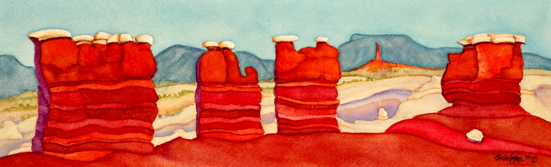
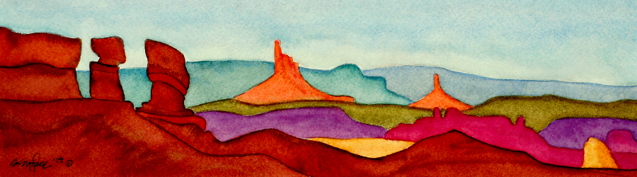
🧥 What to Expect
Typical October temperatures are around 68°F daytime and 43°F overnight. October reveals the vibrant red and orange hues of autumn foliage against Arches' rock formations. Expect moderate crowds as this falls outside peak summer season. The park's main roads and trails are open, but parking can fill quickly, especially near popular sites like Delicate Arch.
Current Weather🚗 Getting Here
Open in Google Maps →From Moab, take US-191 south to the park entrance. The drive offers scenic views of the surrounding red rock landscape. Arrive early to secure parking at the main trailheads.
🏔️ Top Attractions
🎭 Cultural events: see Moab
🍽️ Dinner recommendations: see Moab
Canyonlands National Park
October 24, 2026
National Park Service
What to Know About Canyonlands National Park
Canyonlands National Park in late October features pleasant temperatures and fewer crowds, making it an ideal time for exploration. Be prepared for varying trail conditions and ensure you have sufficient water and snacks for your hikes.
Transportation quirks: Parking can fill quickly at popular trailheads, so plan to arrive early. Some roads within the park may be unpaved and require high-clearance vehicles.

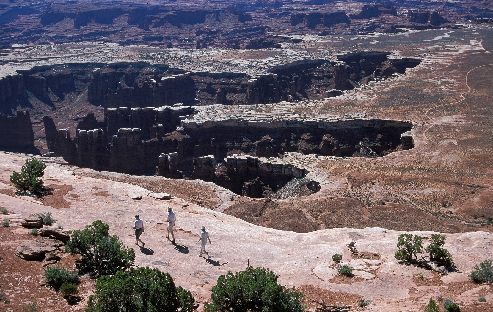
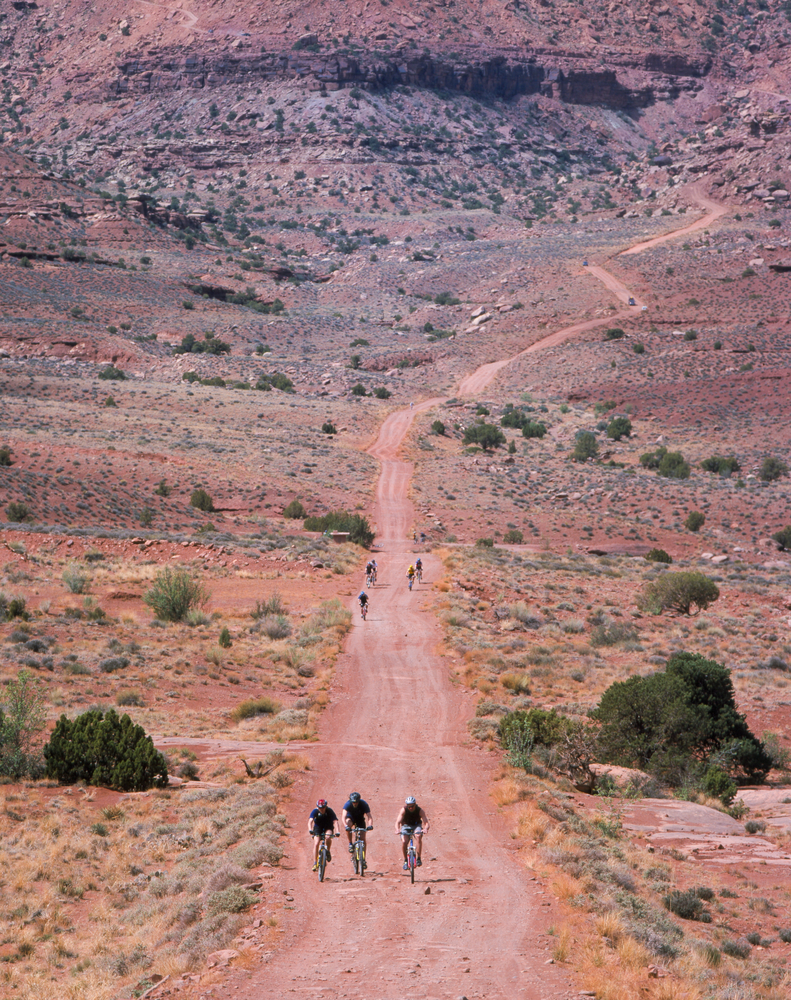
🧥 What to Expect
Typical October temperatures are around 69°F daytime and 47°F overnight. Fall colors are vivid in Canyonlands, with brilliant reds and golds contrasting against the desert landscape. Crowds are lighter than summer, providing a more intimate experience. Some trails may have loose gravel; sturdy footwear recommended.
Current Weather🚗 Getting Here
Open in Google Maps →Take US-191 N from Moab to reach Canyonlands National Park. The drive features sweeping desert views and rocky landscapes along the way. Expect an easy arrival with ample parking at the park entrance.
🏔️ Top Attractions
🎭 Cultural events: see Moab
🍽️ Dinner recommendations: see Moab
What to Know About Telluride
Telluride in late October offers a peaceful atmosphere with vibrant fall colors and cooler temperatures. Be prepared for variable weather and potential icy trails.
Local customs: Locals appreciate outdoor etiquette; always yield to hikers on trails and respect private property.
Best times of day: Mornings are often quieter and perfect for hiking, while afternoons can be busier in town.
Transportation quirks: Parking in town can be limited, especially during peak hours; consider using public transportation options when available.
Safety: Watch for changing weather conditions, especially in higher elevations, and carry layers to prepare for temperature shifts.
Crowd patterns: Expect fewer crowds than during the summer months, making for a more enjoyable experience at popular attractions.
Local etiquette: Tipping is customary in restaurants, typically around 15-20%. Always greet locals with a friendly nod or smile.
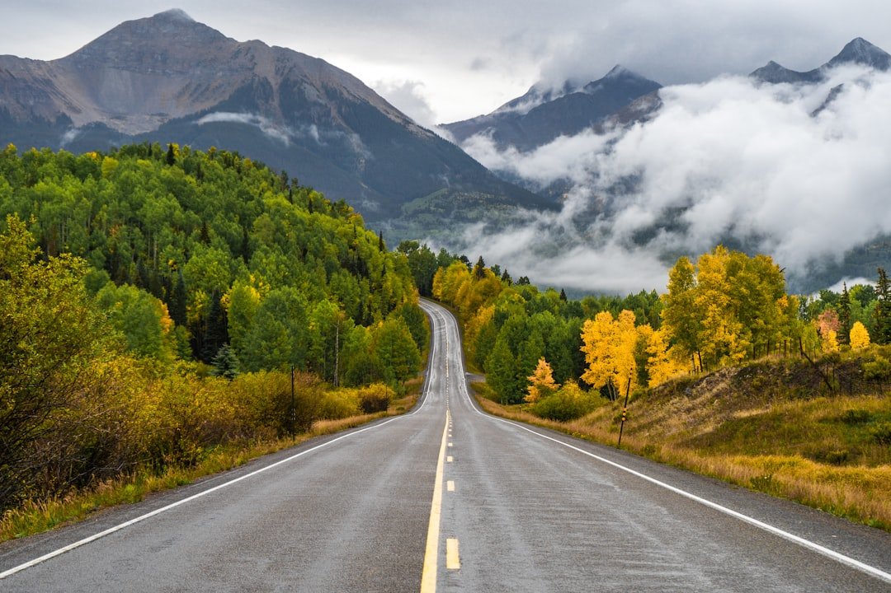
🧥 What to Expect
Typical October temperatures are around 53°F daytime and 30°F overnight. The fall foliage peaks in late October, with aspens displaying vibrant gold against the backdrop of mountain peaks. Crowds are notably thinner than in summer, making for a more relaxed experience. Some hiking trails may have icy patches in the morning, so be cautious.
Current Weather🚗 Getting Here
Open in Google Maps →Take US-191 S to CO-145, a scenic drive featuring mountain landscapes and vibrant fall colors. The final approach into Telluride offers views of the surrounding peaks and valleys. Parking is available in the town center.
🏔️ Top Attractions
⏰ Possible Daily Schedule
🎭 Cultural Events
October in Telluride is typically quieter as the summer tourist season winds down. The cultural scene includes local galleries and a few live music venues, but no major ticketed events are scheduled during your visit. Expect a relaxed atmosphere with opportunities to explore the natural beauty of the area.
Local tip: Check out live music at Alloy Kitchen, which features performances through October 16. It's a good spot to enjoy local talent and unwind after a day of exploring.
🍽️ Dinner Recommendations
What to Know About Pagosa Springs
Pagosa Springs is known for its hot springs and vibrant fall colors in late October. This two-day itinerary allows you to explore natural attractions and enjoy local cuisine. Be prepared for varying temperatures and potential early snow in higher elevations.
Local customs: Locals are friendly and often greet visitors. Tipping at restaurants is customary, typically 15-20%.
Best times of day: Mornings are usually quieter, making them ideal for hiking. Early afternoons provide the best light for photography.
Transportation quirks: Most attractions are accessible by car, and parking is generally available. Some areas may require a high-clearance vehicle due to unpaved roads.
Safety: Stay hydrated during hikes and be aware of wildlife in the area. Always check weather forecasts before heading out.
Crowd patterns: Expect moderate crowds during weekends in October, especially at popular attractions. Weekdays are quieter.
Local etiquette: Respect the environment by following Leave No Trace principles. It’s polite to greet locals and fellow travelers.
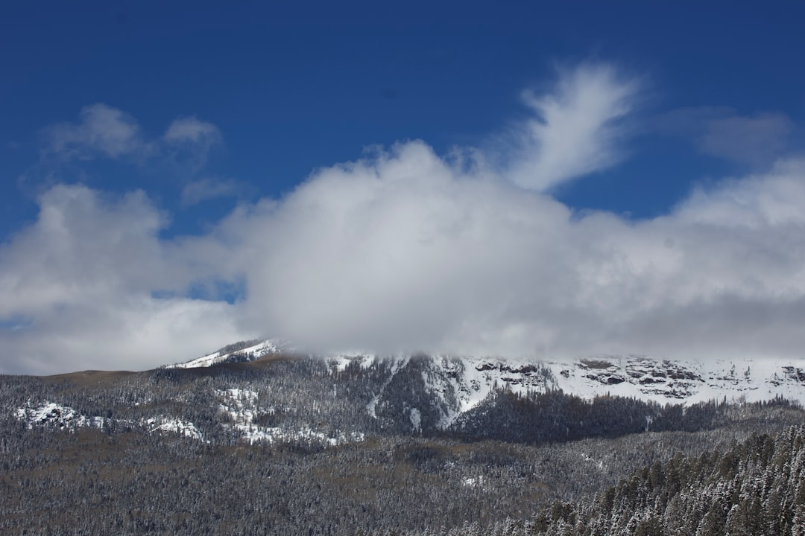
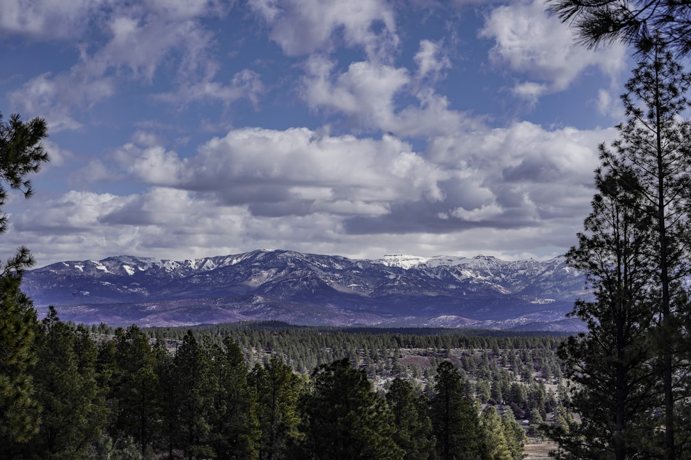
🧥 What to Expect
Typical October temperatures are around 61°F daytime and 33°F overnight. Fall colors peak around Pagosa Springs in late October. This time of year sees moderate crowds compared to summer. Roads are generally clear, but check for possible early snow in higher elevations.
Current Weather🚗 Getting Here
Open in Google Maps →Take CO-145 S to CO-84 E, then follow US-160 E into Pagosa Springs. Enjoy scenic views of the San Juan Mountains along the way. Parking is available at the lodging and attractions.
🏔️ Top Attractions
⏰ Possible Daily Schedule
🎭 Cultural Events
Pagosa Springs in October has a quiet cultural scene. The town features local art galleries and a few venues that may host live music. Visitors can enjoy the natural hot springs and explore the surrounding landscapes, which offer opportunities for hiking and outdoor activities.
Local tip: Check out the local farmers market for fresh produce and handmade goods. It's a great way to experience the community vibe. Pagosa Springs Farmers Market
🍽️ Dinner Recommendations
What to Know About Santa Fe
Santa Fe in late October is characterized by mild weather and vibrant fall colors. Activities range from art exploration to cultural sites, with fewer crowds than peak tourist season.
Local customs: Pace is generally relaxed; locals appreciate friendly conversation. Tipping in restaurants is customary, typically around 15-20%.
Best times of day: Mornings are ideal for exploring outdoor attractions. Late afternoons provide beautiful light for photography.
Transportation quirks: Public transportation is available but limited; a car is recommended for convenience. Parking can be difficult in busy areas.
Safety: Santa Fe is generally safe, but be mindful of your belongings, especially in crowded areas. Stay hydrated and prepare for cooler temperatures at night.
Crowd patterns: Expect lighter crowds in late October compared to summer months. Weekends may be busier due to local events.
Local etiquette: Respect local customs around art and culture. When visiting galleries, it’s polite to ask before touching artworks.
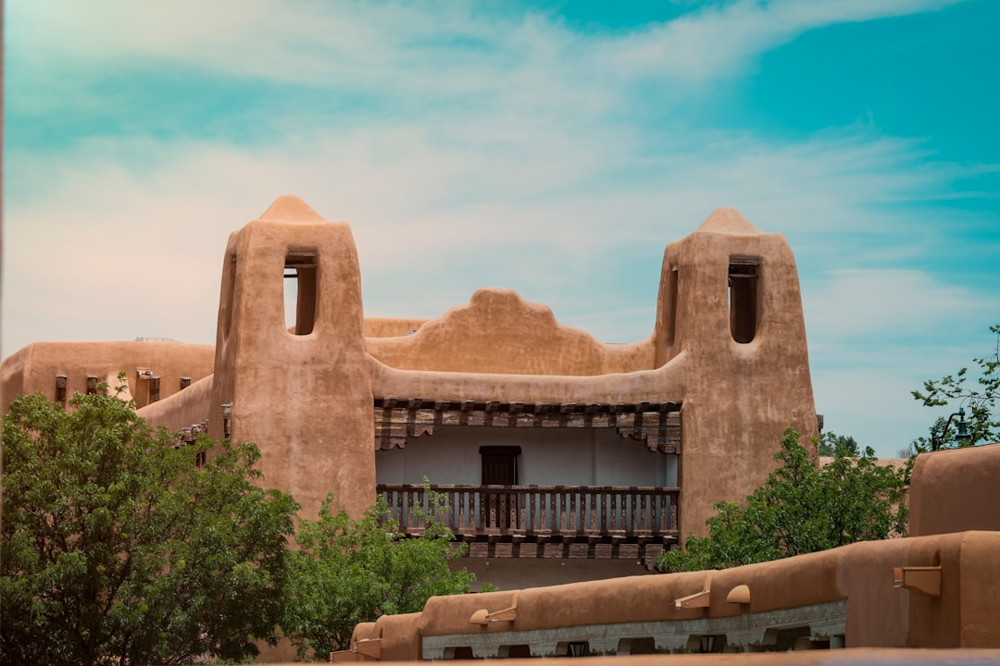
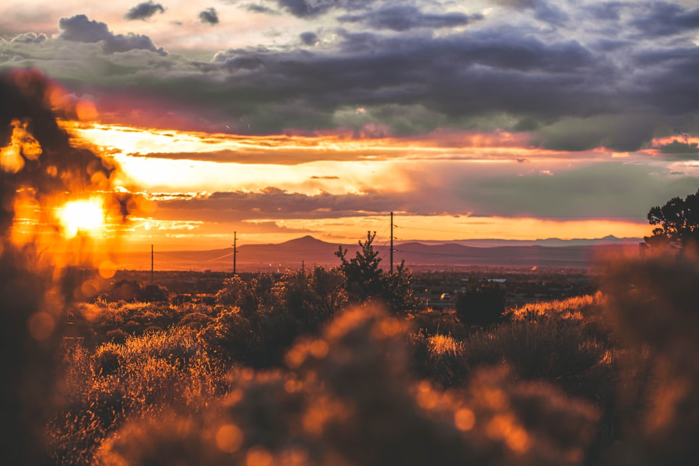

🧥 What to Expect
Typical October temperatures are around 63°F daytime and 43°F overnight. Fall foliage begins to transform Santa Fe, with aspens turning vibrant gold and orange. The crowds are noticeably lighter than summer, making it easier to explore. Some attractions may have reduced hours, so check before visiting.
Current Weather🚗 Getting Here
Open in Google Maps →Drive south on US-84 S through scenic mountain terrain. The route features lush forests and river views. Expect light traffic and a straightforward approach into Santa Fe, with ample parking at most attractions.
🏔️ Top Attractions
⏰ Possible Daily Schedule
🎭 Cultural Events
Santa Fe has a rich cultural scene characterized by its art galleries, local music venues, and vibrant markets. In October, visitors can explore numerous art installations and enjoy live music at various venues throughout the city. The historic plaza often hosts informal gatherings and events that reflect the local culture.
🍽️ Dinner Recommendations
↩️ Departure Route Options
Open in Google Maps →Return anchor: Oct 29 2:30 PM
🎒 Packing Summary (Trip-Wide)
Here's what to bring and where it's needed:
- Camera (Bryce Canyon National Park, Capitol Reef National Park)
- comfortable walking shoes (Santa Fe)
- daypack (Telluride)
- Hiking boots/shoes (Arches National Park, Bryce Canyon National Park, Canyonlands National Park, Capitol Reef National Park, Moab, Pagosa Springs, St. George, Utah, Telluride, Zion National Park)
- Layers / light jacket (temperature swings) (Arches National Park, Bryce Canyon National Park, Canyonlands National Park, Capitol Reef National Park, Moab, Pagosa Springs, Santa Fe, St. George, Utah, Telluride, Zion National Park)
- light rain jacket (Pagosa Springs)
- snacks (Canyonlands National Park, Zion National Park)
- sun protection (St. George, Utah)
- sunglasses (Santa Fe)
- sunscreen (Arches National Park, Moab)
- water bottle (Arches National Park, Bryce Canyon National Park, Canyonlands National Park, Capitol Reef National Park, Pagosa Springs, Santa Fe, St. George, Utah, Zion National Park)
- water bottles (Moab)
- waterproof jacket (Telluride)